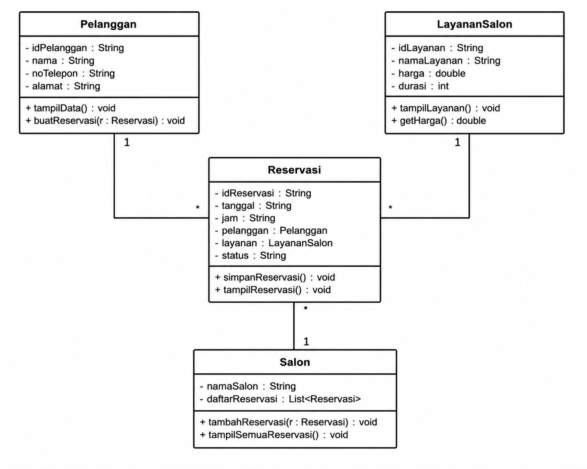
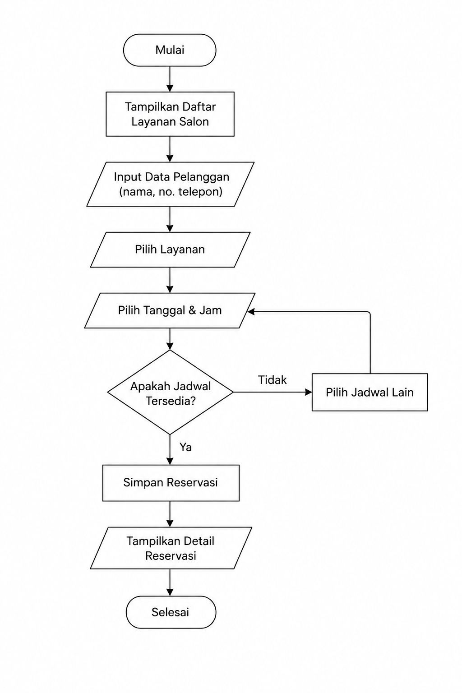

✨ Studi Kasus Object-Oriented Programming (OOP) ✨
Di era digital saat ini, perkembangan teknologi telah mengubah berbagai aspek kehidupan manusia, termasuk dalam bidang pelayanan jasa kecantikan. Meskipun berbagai layanan telah beralih ke sistem digital, masih banyak salon kecantikan yang menggunakan sistem reservasi secara manual melalui telepon, WhatsApp, maupun pelanggan yang datang langsung ke lokasi.
Metode tersebut sering menimbulkan berbagai kendala yang dapat mempengaruhi kualitas pelayanan dan efektivitas pengelolaan bisnis salon. Oleh karena itu, diperlukan sebuah sistem yang mampu membantu proses reservasi agar lebih cepat, akurat, dan terorganisir.
Dalam sistem manual, staf salon harus mencatat seluruh data pelanggan secara satu per satu. Proses ini memiliki risiko kesalahan yang cukup tinggi seperti kesalahan penulisan nama pelanggan, nomor telepon, layanan yang dipilih, maupun jadwal reservasi.
Kesalahan pencatatan tersebut dapat menyebabkan ketidaknyamanan pelanggan dan menurunkan kualitas pelayanan salon.
Karena tidak adanya sistem yang terintegrasi, jadwal reservasi sering kali tidak terpantau dengan baik. Akibatnya dua atau lebih pelanggan dapat memperoleh jadwal layanan yang sama sehingga menyebabkan antrean panjang dan keterlambatan pelayanan.
Data pelanggan yang tersimpan secara manual biasanya tersebar di berbagai media pencatatan sehingga sulit ditemukan kembali ketika dibutuhkan. Hal ini membuat salon kesulitan dalam memberikan pelayanan yang lebih personal kepada pelanggan.
Pelanggan harus menghubungi admin terlebih dahulu untuk mengetahui jadwal yang tersedia. Proses ini membutuhkan waktu lebih lama karena pelanggan harus menunggu balasan dari pihak salon.
Untuk mengatasi berbagai permasalahan tersebut, diperlukan sebuah sistem pemesanan salon online yang dibangun menggunakan pendekatan Object-Oriented Programming (OOP). Pendekatan ini dipilih karena mampu memodelkan objek-objek yang ada dalam dunia nyata ke dalam bentuk program yang lebih terstruktur dan mudah dikelola.
Dalam sistem pemesanan salon online terdapat beberapa objek utama yang saling berhubungan.
Dengan konsep enkapsulasi, data pelanggan dan reservasi dapat disimpan dengan lebih aman. Setiap data hanya dapat diakses melalui method tertentu sehingga risiko kesalahan pengolahan data dapat diminimalkan.
Jika di masa depan salon ingin menambahkan fitur pembayaran online, promo pelanggan, membership, maupun notifikasi otomatis, sistem dapat dikembangkan tanpa harus mengubah keseluruhan struktur program.
Penerapan OOP membuat kode program menjadi lebih rapi, mudah dipahami, mudah dipelihara, dan lebih mudah dikembangkan.
Class Diagram digunakan untuk menggambarkan hubungan antar class yang terdapat pada Sistem Pemesanan Salon Online. Diagram ini menunjukkan struktur objek yang digunakan dalam penerapan konsep Object-Oriented Programming (OOP).

Gambar 1. Class Diagram Sistem Pemesanan Salon Online
Flowchart berikut menjelaskan alur proses reservasi salon mulai dari pelanggan memilih layanan hingga data reservasi berhasil disimpan ke dalam sistem.

Gambar 2. Flowchart Proses Reservasi Salon Online
Kode semu berikut menggambarkan logika dasar proses reservasi pada Sistem Pemesanan Salon Online.
Mulai
Tampilkan daftar layanan salon
Input pilihan layanan
Input nama pelanggan
Input nomor telepon
Input tanggal reservasi
Input jam reservasi
Jika jadwal tersedia Maka
Buat objek Pelanggan
Buat objek LayananSalon
Buat objek Reservasi
Simpan reservasi
Tampilkan
"Reservasi Berhasil"
Jika Tidak
Tampilkan
"Jadwal Tidak Tersedia"
Pilih Jadwal Lain
Selesai
Program dibuat menggunakan bahasa pemrograman Dart dengan menerapkan konsep Object-Oriented Programming (OOP). Sistem terdiri dari beberapa class utama yaitu Pelanggan, LayananSalon, Reservasi, dan Salon.
Setiap class memiliki atribut untuk menyimpan data dan method yang digunakan untuk menjalankan fungsi tertentu. Dengan pendekatan ini, program menjadi lebih terstruktur, mudah dipahami, dan mudah dikembangkan apabila terdapat kebutuhan baru di masa mendatang.
Klik tombol di bawah ini untuk membuka implementasi source code Dart Sistem Pemesanan Salon Online.
Berdasarkan hasil analisis dan implementasi yang dilakukan, Sistem Pemesanan Salon Online mampu menjadi solusi terhadap berbagai permasalahan yang sering terjadi pada proses reservasi salon secara manual.
Sistem ini membantu mengurangi kesalahan pencatatan data pelanggan, menghindari bentrokan jadwal layanan, mempercepat proses reservasi, dan meningkatkan kualitas pelayanan kepada pelanggan.
Penerapan konsep Object-Oriented Programming membuat program menjadi lebih terstruktur, modular, dan mudah dikembangkan untuk kebutuhan salon di masa mendatang.